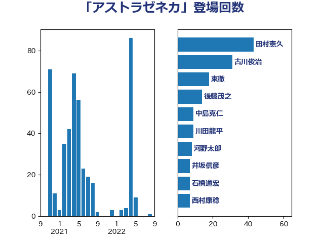

単語「アストラゼネカ」

| 田村憲久 | 自由民主党 | 43 回 |
| 古川俊治 | 自由民主党 | 31 回 |
| 東徹 | 日本維新の会 | 18 回 |
| 後藤茂之 | 自由民主党 | 14 回 |
| 中島克仁 | 立憲民主党 | 9 回 |
| 川田龍平 | 立憲民主党 | 9 回 |
| 河野太郎 | 自由民主党 | 8 回 |
| 井坂信彦 | 立憲民主党 | 7 回 |
| 石橋通宏 | 立憲民主党 | 7 回 |
| 西村康稔 | 自由民主党 | 7 回 |
| 吉田統彦 | 立憲民主党 | 6 回 |
| 大西健介 | 立憲民主党 | 6 回 |
| 山本博司 | 公明党 | 6 回 |
| 田中健 | 国民民主党 | 6 回 |
| 福島みずほ | 社会民主党 | 6 回 |
| 西田実仁 | 公明党 | 6 回 |
| 吉田忠智 | 立憲民主党 | 5 回 |
| 田島麻衣子 | 立憲民主党 | 5 回 |
| 長妻昭 | 立憲民主党 | 5 回 |
| 塩田博昭 | 公明党 | 4 回 |
| 大島敦 | 立憲民主党 | 4 回 |
| 後藤祐一 | 立憲民主党 | 4 回 |
| 柚木道義 | 立憲民主党 | 4 回 |
| 茂木敏充 | 自由民主党 | 4 回 |
| 谷田川元 | 立憲民主党 | 4 回 |
| 仁木博文 | 無所属 | 3 回 |
| 篠原豪 | 立憲民主党 | 3 回 |
| 伊佐進一 | 公明党 | 2 回 |
| 吉川沙織 | 立憲民主党 | 2 回 |
| 打越さく良 | 立憲民主党 | 2 回 |
| 本田顕子 | 自由民主党 | 2 回 |
| 柴田巧 | 日本維新の会 | 2 回 |
| 櫻井充 | 自由民主党 | 2 回 |
| 江田憲司 | 立憲民主党 | 2 回 |
| 田村まみ | 国民民主党 | 2 回 |
| 若松謙維 | 公明党 | 2 回 |
| 西村智奈美 | 立憲民主党 | 2 回 |
| 近藤和也 | 立憲民主党 | 2 回 |
| こやり隆史 | 自由民主党 | 1 回 |
| 三宅伸吾 | 自由民主党 | 1 回 |
| 下村博文 | 自由民主党 | 1 回 |
| 中野洋昌 | 公明党 | 1 回 |
| 井上貴博 | 自由民主党 | 1 回 |
| 井林辰憲 | 自由民主党 | 1 回 |
| 倉林明子 | 日本共産党 | 1 回 |
| 北側一雄 | 公明党 | 1 回 |
| 古屋範子 | 公明党 | 1 回 |
| 国光あやの | 自由民主党 | 1 回 |
| 大塚耕平 | 国民民主党 | 1 回 |
| 宮崎雅夫 | 自由民主党 | 1 回 |
| 宮本徹 | 日本共産党 | 1 回 |
| 小沢雅仁 | 立憲民主党 | 1 回 |
| 小沼巧 | 立憲民主党 | 1 回 |
| 山井和則 | 立憲民主党 | 1 回 |
| 平木大作 | 公明党 | 1 回 |
| 杉尾秀哉 | 立憲民主党 | 1 回 |
| 村井英樹 | 自由民主党 | 1 回 |
| 松沢成文 | 日本維新の会 | 1 回 |
| 池下卓 | 日本維新の会 | 1 回 |
| 浅野哲 | 国民民主党 | 1 回 |
| 矢倉克夫 | 公明党 | 1 回 |
| 石井章 | 日本維新の会 | 1 回 |
| 稲富修二 | 立憲民主党 | 1 回 |
| 稲津久 | 公明党 | 1 回 |
| 篠原孝 | 立憲民主党 | 1 回 |
| 羽生田俊 | 自由民主党 | 1 回 |
| 菅義偉 | 自由民主党 | 1 回 |
| 里見隆治 | 公明党 | 1 回 |
| 阿部知子 | 立憲民主党 | 1 回 |
| 青山大人 | 立憲民主党 | 1 回 |